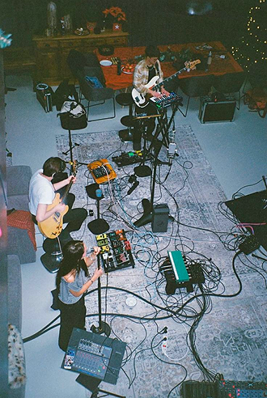
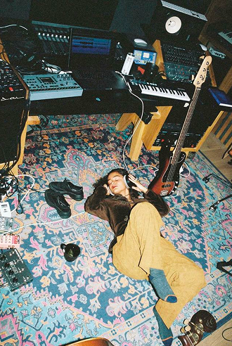
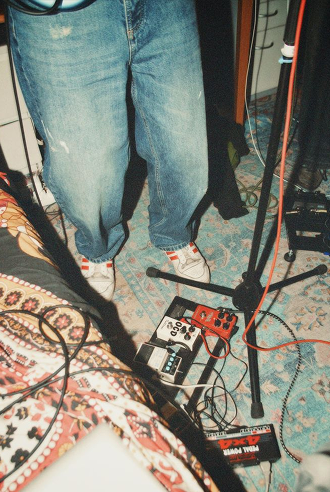

ХРИПОТА — ЭТО НЕ ДЕФЕКТ, ЭТО ХАРАКТЕР
А мы знаем, как с ним работать. Студия, лейбл, запись, сведение. Никаких шаблонов. Только твой голос и наша экспертиза.
ВОТ ЧТО МЫ УМЕЕМ



РАБОТА С ЛЕЙБЛОМ
Цифровая дистрибуция, продвижение в плейлистах, выпуск лимитированного винила и кассет. Только то, что реально работает. Твой голос услышат те, кому это важно.
ПРОДЮСИРОВАНИЕ И ТВОРЧЕСКАЯ ПОДДЕРЖКА
Помогаем услышать твой трек таким, каким он может стать. Аранжировка, поиск саунда, работа над формой и подачей. Не навязываем своё видение, но подсказываем, где можно выстрелить громче.
ОБРАБОТКА И ПОСТПРОДАКШН
Сведение, мастеринг, чистка записей. Мы сделаем твой звук мощным, чистым, но живым. Твой трек зазвучит так, как ты задумал и даже чуть лучше.